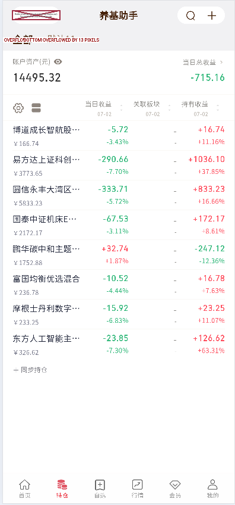
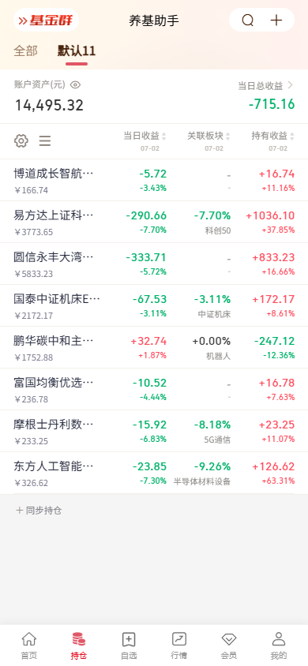

左侧是当前 Flutter 截图，右侧是 uni-app 目标。先确认我们要追求的目标是“尽量复刻右图”，还是只解决当前明显问题。


修顶部米色背景和基金群 logo、账本 tab 样式、资产卡间距、列表行高列宽、关联板块数据显示、底部留白。
优先解决顶部红框/logo 异常、OVERFLOW、乱码/符号、列表错位和缺失的关联板块，不追求完全贴右图。
保留右图信息密度和颜色系统，但让控件触摸区域、排版和动效更符合 Flutter/Material 的手感。